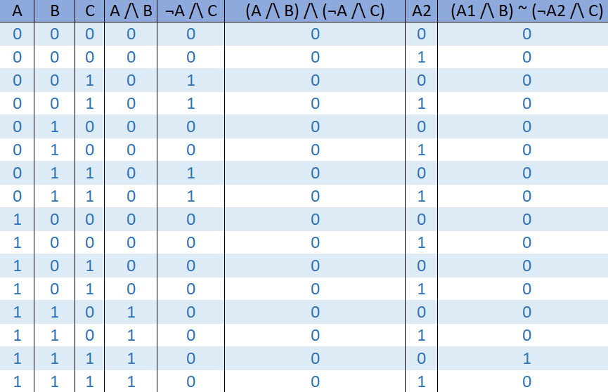
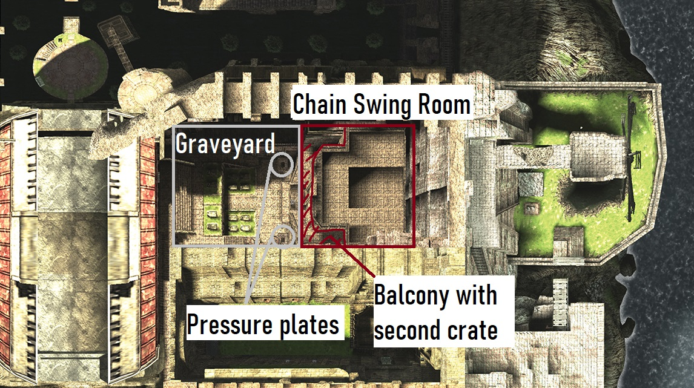
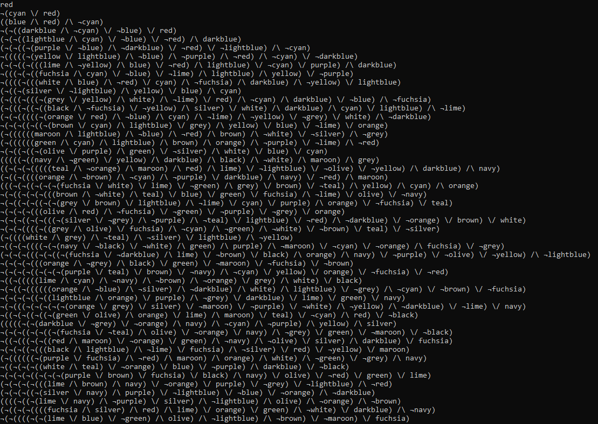
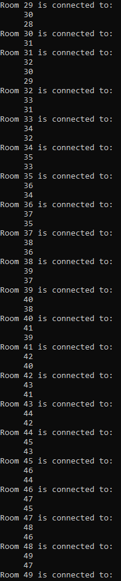
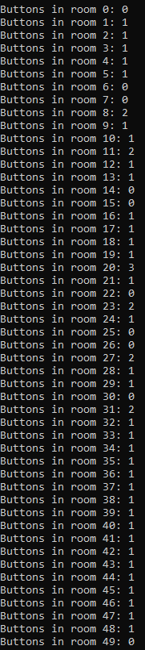
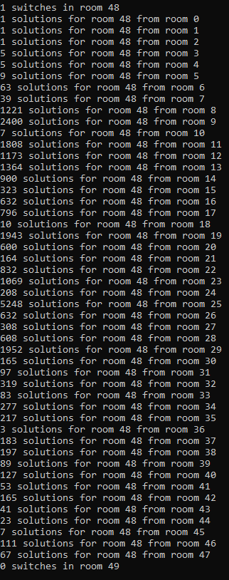
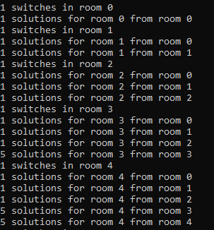
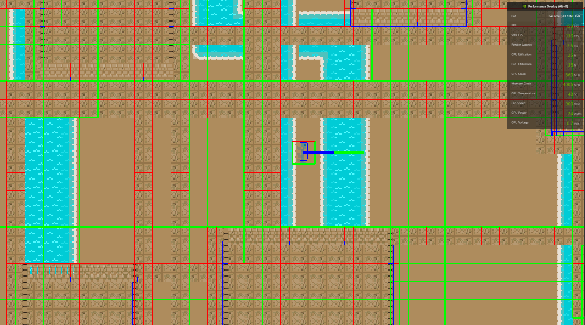

What is it?
- My third year dissertation was designed as a response to reviews of games I'd been watching at the time, which had been complaining about the slew of "skinnerboxes" being released, defined by Kate Compton as the "10,000 Bowls of Oatmeal" problem. My solution was to design a piece of code which could generate the underlying level structure for video games- rather than the actual furnished levels- based on boolean logic.
Why I made it
- One day in September 2019, I was cooking and mistakenly poured fat down the sink. I didn’t notice this until later that day when I poured some cold washing up water away, but the fat had solidified, and the sink was blocked. That week, I’d been thinking hard about what I wanted my dissertation to be. I was particularly inspired by Ico, which I'd played over the summer holidays, and I wanted my project to be something that went against the design philosophy in more typical sandbox games, but I didn’t have any ideas on how to do it.
- While looking for the right parts of the piping to unscrew so I wouldn’t get water and fat on my face, I began to think about how the player in games does the same thing I was doing, attempting to guide the water (the character) through the levels (the pipe), by unblocking the fat (game flags/in game obstacles). On the one hand, this crystalised my approach to my dissertation, and helped me come up with the system I’d eventually implement, on the other hand, I did lose focus on the actual situation at hand and managed to get dirty washing up water on my face.
How it works
- The generator works in several stages. After entering a number of parameters, such as number of rooms or levels, the range, quantity and complexity of puzzles, and how much backtracking a player should be expected to do, it starts off by randomly generating boolean equations. Using the specified number of new variables for each new level. For example level 1 may be A /\ B, level 2 may be ¬A /\ C. After each level is complete, it then checks to see if the combined equation is solvable with all previous levels, and that there exist solutions which are mutually satisfiable between each level with mutual variables- otherwise the game will be impossible to complete. In this instance, that would look like (A /\ B) /\ ( ¬A /\ C), which immediately throws a logical problem with A /\ ¬A.
- I realised that it's this situation in which two equations have no mutually satisfiable solutions, and a shared variable, that actually creates the most compelling and interesting puzzles in games- assuming provisions are made to make it solvable. Luckily, I already had examples of this happening in video games too, so I set about creating a system to represent this, and allow these puzzles to be solved logically
- In the example I've set out: (A /\ B) /\ (¬A /\ C), where each set of brackets represents a level, if there is a situation in which B and C are both true, A still breaks the equation, and it can't ever be solved. By allowing backtracking - effectively splitting A into two different variables- A1 and A2, as long as there is a single solution in which B and C are true, and A is first true, then false, in each state, the equation can be solved. Working as a sort of logical ratchet mechanism.
- This specific equation is the representation I used for the rooms pictured below from Ico. To proceed through to the famous windmill room from the graveyard, you have to first move a crate onto one pressure plate, and guide Yorda to stand on the other, leaving her behind temporarily as you go into the next room. Afterwards, you have to climb to the top of the chain swing room, exit onto a balcony, and push a crate onto the graveyard floor. You must then go back to the graveyard, and move the second crate into position so Yorda can be relieved. You may then take Yorda to the exit of the chain swing room, where she will open the door.
- To put this down as an equation- an exercise I did when trying to see if Ico can be solved by the generator- needing Yorda to exit any room is represented by A. The pressure plates are represented by B, and the crate from the chain swing room's balcony is represented by C. This means that the full equation to get from the start of the graveyard to the windmill room is (¬A /\ B) /\ (A /\ C), which, if you check the truth table is unsolvable. If you replace the connecting AND operator with the "ratchet" operator: (¬A /\ B) ~ (A /\ C), such that it's possible in game for A to be false, then true in that order at separate times, maintaining B and C being true. The ratchet represented in game by the fact that the only way to get the crate down and free Yorda is to backtrack from the chain swing room, as you can't climb to the balcony from the graveyard. By going through the chain swing room, you essentially ratchet your progress forward, leaving you access to all previous rooms, or at least the necessary ones without leaving you stuck.
Observations
- By focusing on making it reusable as black box middleware from the start, I was also able to make sure that the objects are fairly sensible, and can be accessed extremely easily. Because of the level of abstraction, it’s possible to use this in any number of ways as well, not necessarily just for puzzle games. At the time for example, I was doing a module on software verification, which inspired me to attempt to use it as a piece of software to verify that existing games were completable. I already knew they were having played them through to the credits, but through using the software, I was able to discover a single logical skip in Ico (almost impossible to execute because of random events), and that my program works as expected. Additionally, with my work on Shuttle Engine, I had planned to make the entire program serialisable, so that a structure may be generated once during development, manually checked if deemed necessary, then reused as a level, rather than re-running the program for random generation, although, given that this can print to plain text, there's also the possibility of designing an entire game around the results, without actually needing to include the code for the generator in the project.
How successful has it been?
- On many levels, this is possibly one of my most successful projects. Firstly, I've spent a lot of time over the years trying to find out if anyone else had come up with this "ratchet" operator, or any other way of performing this that doesn't involve explicitly splitting variables, and I've come up with nothing. While lack of evidence doesn't confirm this, it does make me a little hopeful that I've somehow invented a new operator, disregarding the amount of use this would actually see. The only thing I've ever used it for being solving contradictions. Encouragingly, having condensed this and spoken to a friend, we were able to come up with a concept for a basic ratcheting circuit, so if I could prototype that, and prove it works, it would be a great start.
- Then, there's the fact that the software just works really well. The output is a bit verbose, and only available in console, also the variables -based on the unity colours which can be referred to by name- aren't the easiest to read, but it runs quickly, and fills every use case I had in mind for the project. I did manage to find one similar piece of work, in a paper called "Quantified Boolean Formulas[sic]: Call the Plumber”, which relies on player actions as variables, rather than game flags, and is far more low level, and uses a game specific implementation.
- I was also able to put it in Shuttle Engine, and it just works. Granted I never got round to making the variables interactable, this is more an implementation problem than an issue with the game engine, or the generator. The other major achievement for this project is just how close the finished product was to my original goals. Every single goal I’d had at the start was achieved exactly as I’d envisioned when I wrote it.
What would I do differently if I started over?
- I would love to say nothing, because results wise, it's true. I can't think of anything much that would require a different approach. However, nagging away at me in my brain, is the fact that many times in the paper, I mention the word "tautology", when in actual fact, I mean contradiction. It's a level of embarrassment I ascribe to the likes of quickly, confidently blurting out incorrect mental maths to someone I respect (an experience I had a few days ago at time of writing). So just about the only thing I would do differently is find and replace all mentions of tautology with contradiction in the paper. I can only assume I was on a page reading the definitions for both, and in a caffeine fuelled haze, I somehow got the definitions mixed up.
How I've been able to use it
- In spite of technically being smaller than Shuttle Engine, it has been one of my largest projects to date, requiring that I justify everything I wrote as I was going along. This took a phenomenal amount of research and testing, so it was a major test of time management which made subsequent larger projects like Shuttle Engine far less intimidating.
- I still need to actually make a full game using output from this generator however, whether randomly generated every time, baking the generator in, or using one specific output, and designing around that. It's something do plan to use in Ida and my tank game, however, I'm nowhere near that stage for either yet unfortunately.
-

-

-

Example output of which prior rooms each room is connected to
Quantity of buttons per room. Higher quantity generally means the puzzle requires more specific backtracking
Number of mutually satisfiable solutions with prior rooms. Has to be at least 1 per room. It's also possible to limit mutually satisfiable solutions, to increase difficulty and interest
Number of mutually satisfiably solutions with prior rooms, but earlier in the level, which is more difficult
-
